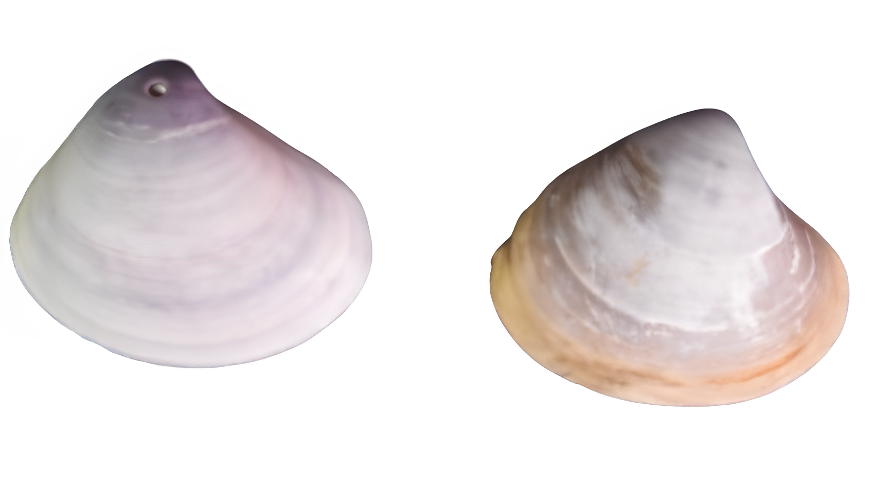

×
Demania splendida
Brown Swimming Crab
Decapoda
Xanthidae
Not Evaluated
Pentagonal carapace. Antero-lateral borders are convex. The front is deeply divided to form two prominent bluntly pointed lobes. Distinct groove present
Marine. Embryos develop into free-swimming trocophore larvae, succeeded by the bivalve veliger, resembling a miniature clam.
Not Available